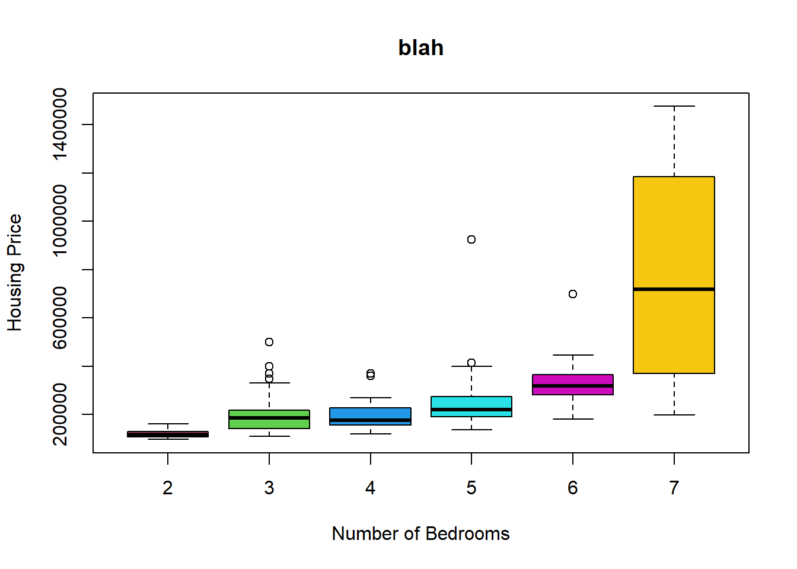

# Load the data:
housing <- import('https://github.com/byuistats/Math221D_Cannon/raw/master/Data/MadisonCountyRealEstate.xlsx') %>% select(ListPrice, Bedrooms)Statistical Foundations
Unit 1 Review
Assessment Objectives
- Apply the 3 rules of probability in different scenarios
- Describe the 5 steps of the statistical process
- Differentiate between an observational study and an experiment
- Differentiate between a population and a sample
- Describe the 4 random sampling schemes
- Explain importance of random sampling
- Distinguish between quantitative and categorical variables
- Create graphical summaries of data (boxplots, histograms) and be able to make conclusions based on the graphs
- Create numerical summaries of data (mean, sd, 5 number summary, percentiles) and compare groups (centers, spreads)
- Distinguish between a parameter and a statistic
- Determine the 5 number summary from a boxplot
- State the properties of a normal distribution
- Calculate the z-score for an individual from a normal population with mean, \(\mu\), and std. dev, \(\sigma\)
- Calculate probabilities (>, <, between) of certain values given \(\mu\) and \(\sigma\)
- Describe the concept of a sampling distribution of the sample mean
- State the Central Limit Theorem
- Determine the mean of the sampling distribution of the sample mean given \(\mu\) and \(\sigma\)
- Determine the std. dev. of the sampling distribution of the sample mean given \(\mu\) and \(\sigma\)
- Determine the shape of the sampling distribution given a sample size, n, and \(\mu\) and \(\sigma\)
- State the Law of Large Numbers
Design the Study
You and a colleague are interested in studying the relationship between social media use and mental health among youth ages 18-24. You decide to use the Psychological Wellbeing Scale (PWB) developed by Stanford University as your metric for comparison (the response variable).
Q1.1:
List 5 factors (explanatory variables) related to social media use that might impact Wellbeing.
Include whether or not the factors are quantitative or categorical (include at least one of each):
Q1.2:
What is the population of the study?
Q1.3:
Suppose you are not resource limited. Briefly describe the sampling scheme you would use and why you would choose it to best represent the population:
Q1.4:
Give a brief description of the other 3 types of sampling schemes and explain why they don’t make sense in this situation:
Q1.5:
Suppose it is impractical to sample from the population described in Q1.2. What population might be more feasible to sample from?
Q1.6:
How would modifying the population of interest impact your sampling scheme?
Q1.7:
Suppose you sent out a Facebook survey to all of your followers and asked them to respond if they are in your target demographic. How might this impact the conclusions of your study?
Describe/Summarize the Data
For this section you will program in R. Don’t forget to load the libraries first:
Housing Prices in Rexburg
You are interested housing prices in Rexburg, Idaho. Load the housing data and respond to the following questions.
Q2.1:
Create a histogram of listing price.
favstats(housing$ListPrice ~ housing$Bedrooms) housing$Bedrooms min Q1 median Q3 max mean sd n
1 2 96900 108175 117450 129675 160000 119984.6 15206.23 26
2 3 109900 142150 184700 213650 499999 199120.8 79099.36 48
3 4 119900 157000 174900 228000 369000 200642.1 71075.72 19
4 5 137000 189900 219900 275000 924500 250483.8 131359.88 37
5 6 179900 281500 319000 364000 699000 340740.0 118103.19 15
6 7 199000 454675 717450 1040000 1475000 777225.0 545108.00 4
missing
1 0
2 0
3 0
4 0
5 0
6 0What is the shape of the distribution of list prices for homes in Rexburg.
Q2.2:
Calculate the mean, standard deviation, 5 number summary and sample size of housing prices for each number of bedrooms.
boxplot(housing$ListPrice ~ housing$Bedrooms, col=c(2,3,4,5,6,7), xlab = "Number of Bedrooms", ylab = "Housing Price", main = "blah")
bold italics
What is the standard deviation of homes with 3 bedrooms?
How do you interpret that number?
Q2.3:
What is the maximum value home price for a 2 bedroom house?
Suppose there was a typo in the data and the maximum price for a 2 bedroom house was accidentally entered as $1,700,000.
How would the median change?
How would the mean change?
How would the standard deviation change?
Q2.4:
Create a side-by-side boxplot of housing prices for each group. Modify the color scheme so that each boxplot is a different color.
What trends do you notice?
Why might the box plot for 7 bedroom homes look so different than the others?
Probability
Hair Color
Brother Cannon has been collecting hair color data about his students for the last several semesters. The proportion of students with each hair color are as follows:
(run the following R chunk to see the table more clearly)
knitr::kable(tibble(Red="???", Brown=.37, Black=.35, Blond = .22, Other=.02))| Red | Brown | Black | Blond | Other |
|---|---|---|---|---|
| ??? | 0.37 | 0.35 | 0.22 | 0.02 |
Q3.1:
What percent of Brother Cannon’s students have red hair?
Q3.2:
What’s the probability that a randomly selected student has either black or brown hair?
Faculty Salaries
Faculty salaries at a university are known to be normally distributed with a mean of $108,552 and a standard deviation of $13,277.
You randomly sample n=15 faculty members and calculate their average salary.
Q5.1:
What is the mean of the distribution of sample means for this sample size?
Q5.2:
What is the standard deviation of sample means for this sample size?
13277/sqrt(15)[1] 3428.107Q5.3:
What is the shape of the distribution of sample means for this sample size and why?
Normal Probability Calculations
High blood pressure is strongly associated with a host of diseases and increases risk of cardiac arrest (hear attacks) in older patients.
Suppose that systolic blood pressure in the US is normally distributed with a mean = 128 and a standard deviation of 11.
Use the following calculator to answer the questions below:
Q6.1:
What is the probability that a randomly selected person in the US has a systolic blood pressure of greater than 145?
Q6.2
What is the probability that a randomly selected group of 10 people in the US have an average blood pressure less than 130?
Q6.3:
Your doctor says you’re in great shape, and that you are in the 20th percentile for systolic blood pressure.
What does it mean that you are the 20th percentile?
What is your blood pressure?
Social Media Use
Q4.1:
The number of hours students spend on social media a week is known to be left skewed with a mean of 12 hours and a standard deviation 1.5.
Suppose we take a random sample of 50 students and calculate the average time they spend on social media.
Q4.2:
What is the mean of the distribution of sample means for this sample size?
Q4.3:
What is the standard deviation of sample means for this sample size?
Q4.4:
What is the shape of the distribution of sample means for this sample size and why?